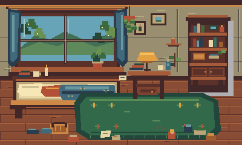
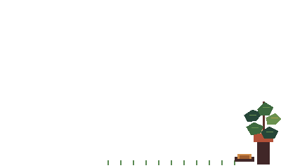
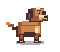
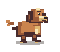
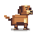
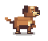

Accepted Canvas identity reference

Godot Moss v2

Character-only pass. The new Godot sprite restores the accepted upright/compact Moss identity, removes the oversized horizontal beagle-like head and collar, keeps idle planted, and adds denser fur/face/chest/paw clusters.





